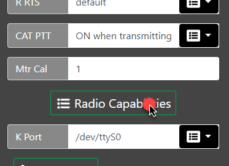
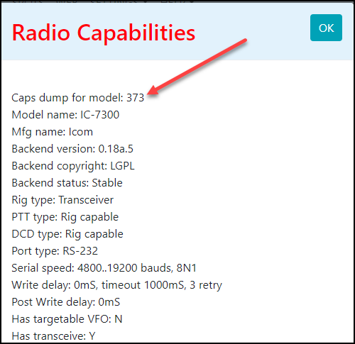

|
<< Click to Display Table of Contents >> Navigation: Technical > Troubleshooting |
Radio won't connect
When you try to connect a radio by using the Connect Radio button and the connection fails, take a close look at the error message to get clues. The normal failure is "Connection Refused" with a suggestion to check settings.
First verify that the radio is on and the USB cable associated with that radio is plugged in to RSS. Check the Port option in SETTINGS>Radio to make sure the radio com port is in the drop-down list.
Try rebooting RSS from SETTINGS>System>Reboot RigPi to see if that fixes it.
The Connect Radio and Disconnect Radio buttons on the Tuner window require the radio to be set up in SETTINGS>Radio first. If it hasn't been set up, RSS won't be able to connect. (RigPi is initially configured with a "dummy" radio simulation so you can use Connect Radio with no further setting changes required.)
If you have more than one USB device connected to RSS (several radios, rotor controls or an external WinKeyer), the port assigned to each cable can change when you reboot. What was /dev/ttyUSB0 connected to radio A may now be connected to radio B, and radio A is /dev/ttyUSB1 after a reboot. In SETTINGS>Radio>Port it is best to use the long port name form each device. The long port names do not change after a reboot.
Next try starting the rig connection manually. This requires the use of the Raspberry Pi Desktop Terminal. The manual connection uses the Hamlib model number for your radio. In SETTINGS>Advanced Radio click the Radio Capabilities button.


At the top you will see 'Caps dump for model: xxx,' where xxx is the model number. Make note of this number.
To clear any radio control remnants, reboot RSS from the System Settings window.
Open Terminal by double-clicking the black prompt icon in the Raspberry Pi Task Bar and type the following (3073 happens to be the model number for the Icom IC-7300):
rigctl -m 3073 -r /dev/ttyUSB0
This command assumes you have made no changes to the default settings in the radio. If you have changed Baud rate to 115,200, use this command:
rigctl -m 373 -r /dev/ttyUSB0 -s 115200
The resultant report should give more clues, which might simply be "Timed out." More diagnostic information can be obtained by using the "v" parameter such as below:
rigctl -m 214 -r /dev/ttyUSB0 -vvvvv
If nothing is learned, we need to check that the port is correct. Get a list of available ports by typing (lower-case L):
ls /dev/ttyU*
If more than one USB port is listed, try the rigctl commands with the other ports.
Once you are able to get rigctl started, a prompt "Rig command:" is shown. Type f followed by Enter and see if the reported frequency is correct. Type Ctrl+C to exit and stop the rigctl process.
If you are able to connect to and control the radio, we can start the RigPi using a test mode with the Test Radio button in Advanced Radio Settings.
Near the top you will see a line that reads "$tUser=$argv[1];" which we need to modify. Use the cursor arrow keys to move the insertion point to the front of $argv, then enter the characters 1;//.
Slightly further down, after "}else{," you need to change the variable $tUsername='admin'; so that is shows your username.
Type Ctrl+O to save the file and Ctrl+X to exit Nano.
Start hamlibDo by typing this line:
php hamlibDo.php
See if there are any error reported. If there don't appear to be any errors, open a RigPi browser and see if you can control the radio.
The report shown in Terminal includes the command to start rigctld. Try entering the complete line in Terminal and press Enter. See if there are any error reported.
If none of these steps gets the radio connected, it is time to check the USB cable and radio for problems. This can be done running a control program on another computer by moving the USB cable to that computer.
For a helpful guide providing additional information, here is a link to the Hamlib FAQ:
Frequency Display Flickers
The RigPi frequency readouts may flicker if radio control drops out intermittently. If using an Icom radio, put a check in Disable Split Polling in SETTINGS->Advanced Radio Settings. Restart the radio connection.
If your radio does not support CAT setting and reading of AF Gain, RF Gain, Power, or Mic Level, go to SETTINGS->Slider Overrides. Set the level for each slider to 0 to disable and hide that function on the Tuner and Keyer windows..
Radio Control Logging
The Test Radio function in Advanced Radio settings also starts a log for recording radio status and commands. You will find this log in /var/log/rigpi-radio.log. It is cleared each time you use the Test Radio function so only the most recent session is kept. You can use the edit program nano from the Raspberry Pi terminal to view the log.
sudo nano /var/log/rigpi-radio.log
Rotor Control Logging
The Test Radio function in Advanced Radio settings also starts a log for recording rotor status and commands. You will find this log in /var/log/rigpi-rotor.log. It is cleared each time you use the Test Radio function so only the most recent session is kept. You can use the edit program nano from the Raspberry Pi terminal to view the log.
sudo nano /var/log/rigpi-rotor.log
User Access Logging
A log of all users accessing RigPi can be found here:
sudo nano /var/log/rigpi-access.log
RigPi Audio Issues
No Audio
RigPi uses the optional MFJ RigPi Audio board for VoIP, digital modes, or even for a spectrum analyzer (panadapter). If RigPi Audio doesn't appear to be working, a number of tests can be use to isolate the problem.
RigPi Audio can receive/send audio through the RJ-45 connector on the USB end of the RigPi unit or from the 3.5 mm jack end. We will use the 3.5 mm jack end. If using the RJ-45 connection, remove that cable for now.
RigPi Audio uses a Linux device driver named snd_rpi_proto. All drivers and settings required for RigPi Audio are initially set and do not require changes.
Right-click the Speaker icon at the top of RSS Desktop to make sure snd_rpi_proto is shown as the selected device. If it isn't in the list, try rebooting RSS from the RigPi SETTINGS>System menu. If it fails to appear, the RigPi Audio board may have a problem.
To look for errors on booting, open RSS Terminal and type the following:
dmesg | grep audio
You will see a list of possible errors. The last line should say
[ 4.xxxxx] snd-rpi-proto soc:sound: wm8731-hifi <-> 3f203000.i2s mapping ok
which says the board is connected. If not, the RigPi Audio board probably needs repair.
Next we will try some audio tests using Linux programs through RSS Terminal.
Plug in a high impedance set of ear buds to the TX OUT connector. Type the following command (c2 says 2 channels):
speaker-test -c2
You should hear pink noise in the left ear bud, then silence, followed by pink noise.
Here is a tone test:
speaker-test -t sine -f 2000 -c2
You will hear a 2000 Hz tone in the left ear bud.
Finally, a voice test:
speaker-test -t wave -c2
You will hear a woman's voice in the left ear bud.
If any of these test fail, we can use the Linux program named Alsamixer from RSS Terminal to check the settings. Type
alsamixer
The following settings are used for RigPi Audio:
Master Gain |
86<>86 (adjust to suit) |
Master Playback |
OFF (MM) |
Sidetone (not radio sidetone) |
0 |
Mic Boost |
0 |
Playback De emphasis |
OFF (MM) |
ADC High Pass Filter |
ON (OO) |
Input Mux |
Line In |
Output Mixer HiFi |
ON (OO) |
Line |
L R Capture |
Mic Boost |
0 |
Capture |
18<>18 (adjust to suit) |
Can't connect to Mumble server
Mumble server starts automatically when RigPi boots. First we can make sure Mumble server is actually running, then we'll check the Mumble log.
To confirm the Mumble is running:
In Terminal, type:
ps -ef | grep mumble-server
The command should show:
mumble-+ 582 1 0 12:22 ? 00:00:00 /usr/sbin/murmurd -ini /etc/mumble-server.ini
The results confirm that the murmur (mumble server) daemon is running, using the mumble-server.ini initialization file.
To make sure we can connect to the default Mumble port, type:
nc -vz rigpi4.local 64738
You should see this response:
Connection to rigp4.local 64738 port [tcp/*] succeeded!
If these tests are successful, we can check the Mumble server log. Type:
sudo cat /var/log/mumble-server.log
Here is the response:
...
<W>2019-01-23 12:22:25.792 Initializing settings from /etc/mumble-server.ini (basepath /etc)
<W>2019-01-23 12:22:25.815 Meta: TLS cipher preference is "ECDHE-ECDSA-AES256-GCM-SHA384:ECDHE-RSA-AES256-GCM-SHA384:ECDHE-ECDSA-AES128-GCM-SHA256:ECDHE-RSA-AES128-GCM-SHA256:AES256-SHA:AES128-SHA"
<W>2019-01-23 12:22:25.815 OpenSSL: OpenSSL 1.1.0j 20 Nov 2018
<C>2019-01-23 12:22:25.850 Successfully switched to uid 116
<W>2019-01-23 12:22:28.784 ServerDB: Opened SQLite database /var/lib/mumble-server/mumble-server.sqlite
<W>2019-01-23 12:22:28.814 Resource limits were 0 0
<W>2019-01-23 12:22:28.814 Successfully dropped capabilities
<W>2019-01-23 12:22:33.835 OSInfo: Failed to execute lsb_release
<W>2019-01-23 12:22:37.123 Murmur 1.2.18 (1.2.18-1) running on X11: Linux 4.14.79-v7+: Booting servers
<W>2019-01-23 12:22:45.343 1 => Server listening on [::]:64738
<W>2019-01-23 12:23:32.814 1 => Announcing server via bonjour
<W>2019-01-23 12:23:33.002 1 => Registration needs nonempty 'registername', 'registerpassword' and 'registerurl', must have an empty 'password' and allowed pings.
<W>2019-01-23 12:23:33.003 Object::connect: No such slot MurmurDBus::userTextMessage(const User *, const TextMessage &)
If connection attempts have been made they are included at the end of the log. Check these lines for an indication of why the connection was not made.
If you see "Connection refused" in the Mumble status column, try logging in with a different user name. User names must be unique. You can't use names like W6HN two times, but you can use W6HN and W6HN-1 to make them unique.
Mumble gives access to more settings through an account named SuperUser. Try logging in using that username with password 7388.
Finally, visit the Mumble Help pages to additional help. Here is a link to the instructions for logging into a Mumble server:
RigPi Audio Input Level Too Low
RigPi audio can be high level line-input of up to 2-volts peak-to-peak, or low level microphone input (200-mV peak-to-peak). In addition, the input levels can be adjusted. These settings are done through Alsamixer. See the Alsamixer topic in Other Programs.
Audio Feedback when Transmitting
A second audio path can cause transmit feedback. Turn off the Mon function in your radio. There may be a hidden menu item for Line Out Mon or USB Audio Mon, depending on your radio. Make sure your Mic isn't picking up audio. Turn the Mic Gain on your radio to 0. Menu settings can also be used to mute the microphone.
Remote RigPi Won't Connect to Radio RigPi
If a remote RigPi fails to connect to the radio RigPi, here are some things to try.
In remote RigPi, check the R Port and Keyer Port in Advanced Settings. You should see the <ip>:<port> for the radio RigPi. The remote radio should be your physical radio, such as Icom 7300. The Keyer should be via CAT.
If operating from a remote location, use the WAN IP for the network the radio RigPi is using. Open port 453x in your home Router. The port to open will depend on which account you are trying to connect to. For account 1, use 4532. If it is account 2, <port> will be 4534.
Use Terminal in the remote RigPi Desktop and attempt to connect from there using the command:
rigtcl -m 2 -r <IP>:<port>
Once connected you will see a Command prompt. Enter f (to get frequency) followed by the Enter key.
If that fails, try through Terminal on the radio RigPi.
These steps should give you an indication of where the problem lies.